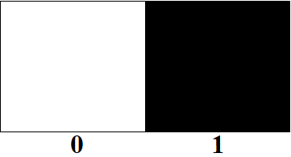
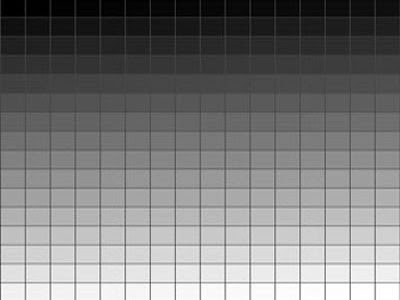

Partie 2 : Formats et codage des images
L'image, un tableau de pixels
Pour un ordinateur, une image est un ensemble de pixels rangés dans un tableau à deux dimensions.
Image en noir et blanc : chaque pixel vaut 0 (blanc) ou 1 (noir) — un seul bit par pixel.

Image en niveaux de gris : chaque pixel prend une valeur entière de 0 (noir) à 255 (blanc) qui représente l'intensité lumineuse.

Image en couleurs (RVB) : chaque pixel est représenté par trois valeurs de 0 à 255 : l'intensité de rouge (R), de vert (V) et de bleu (B).
Codage sur 8 bits : chaque nombre de 0 à 255 se code sur un « mot » de 8 bits (exemple : 10010100 code la valeur 148). 1 octet = 8 bits. Un pixel couleur occupe donc 3 octets (un par composante).
Exercice 1 — Obtenir une couleur précise
Utilise le mélangeur ci-dessous. Règle les curseurs pour obtenir le code RVB 135 ; 56 ; 204. Quelle couleur obtiens-tu approximativement ?
Ma réponse :
Exercice 2 — La synthèse additive
En écran, on additionne de la lumière rouge, verte et bleue : c'est la synthèse additive. Joue sur les curseurs pour répondre :
a. Rouge aux 3/4 (≈ 190), vert à la moitié (≈ 128), bleu au quart (≈ 64) : de quelle couleur s'approche-t-on ?
b. Les trois intensités égales au tiers (≈ 85) : quelle couleur obtient-on ?
c. Garde les trois intensités égales et fais-les varier de 0 à 255. Que remarques-tu sur la couleur obtenue ?
Ce que je retiens
Une image est un tableau de pixels. En noir et blanc, 1 bit par pixel ; en niveaux de gris, une valeur de 0 à 255 ; en couleur, trois valeurs RVB de 0 à 255 (3 octets). Sur un écran, les couleurs sont obtenues par synthèse additive : quand R = V = B, on obtient un gris (noir si 0, blanc si 255).
🧠 Teste tes connaissances
Réponds aux questions puis clique sur « Vérifier » — la correction s'affiche aussitôt.
1. Dans une image en noir et blanc, quelles sont les deux valeurs possibles d'un pixel ?
2. Dans une image en niveaux de gris, entre quelles valeurs varie l'intensité de luminosité d'un pixel ?
3. Comment un pixel d'une image en couleurs est-il représenté ?
4. Combien de bits sont nécessaires pour coder un nombre compris entre 0 et 255 (une intensité de couleur) ?